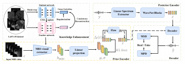
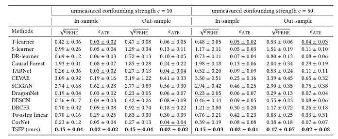

About Me
Hi!
Publications
-
[MICCAI 2025] Speech Audio Generation from dynamic MRI via a Knowledge Enhanced Conditional Variational Autoencoder
Yaxuan Li, Han Jiang, Yifei Ma, Shihua Qin, and Fangxu Xing.Abstract [PDF] [BIB] [Web]
Dynamic Magnetic Resonance Imaging (MRI) of the vocal tract has become an increasingly adopted imaging modality for speech motor studies. Beyond image signals, systematic data loss, noise pollu tion, and audio file corruption can occur due to the unpredictability of the MRI acquisition environment. In such cases, generating audio from images is critical for data recovery in both clinical and research applications. However, this remains challenging due to hardware con straints, acoustic interference, and data corruption. Existing solutions, such as denoising and multi-stage synthesis methods, face limitations in audio fidelity and generalizability. To address these challenges, we propose a Knowledge Enhanced Conditional Variational Autoencoder (KE-CVAE), a novel two-step "knowledge enhancement + variational inference" framework for generating speech audio signals from cine dy namic MRI sequences. This approach introduces two key innovations: (1) integration of unlabeled MRI data for knowledge enhancement, and (2) a variational inference architecture to improve generative modeling capacity. To the best of our knowledge, this is one of the first attempts at synthesizing speech audio directly from dynamic MRI video sequences. The proposed method was trained and evaluated on an open-source dy namic vocal tract MRI dataset recorded during speech. Experimental results demonstrate its effectiveness in generating natural speech wave forms while addressing MRI-specific acoustic challenges, outperforming conventional deep learning-based synthesis approaches.
-
[AAAI 2025 Workshop] A Reweighting Based Approach for Treatment Effect Estimation Under Unmeasured Confounding with Non-Representative Randomized Data
Yaxuan Li, Chuan Zhou.Abstract [PDF] [BIB] [Web]
Causal effect estimation aims to measure the true causal relationship between treatment and outcome variables, which is widely applied in areas such as medicine, commerce, and sociology. A challenge in causal effect estimation is that un measured variables may affect both treatment and outcome variables, which are named unmeasured confounders. Traditional methods of causal effect estimation are biased in the presence of unmeasured confounding. Previous data fusion-based methods employ observational data (OBS) combined with limited-sized randomized controlled trial (RCT) data to eliminate confounding bias. However, existing methods typi cally assume that the OBS and RCT data come from the same target population, a relatively strong assumption given the difficulties of randomized trials. In this paper, we consider re laxing this assumption to achieve data fusion in the case where the RCT data is a biased sample of the target population, thus eliminating selection bias and obtaining unbiased estimates of causal effects. We propose a reweighting-based approach that uses OBS and RCT data successively and debiases in the second stage via reweighting. Extensive experiments are conducted to demonstrate the effectiveness of our method.
Contact
TO DO.